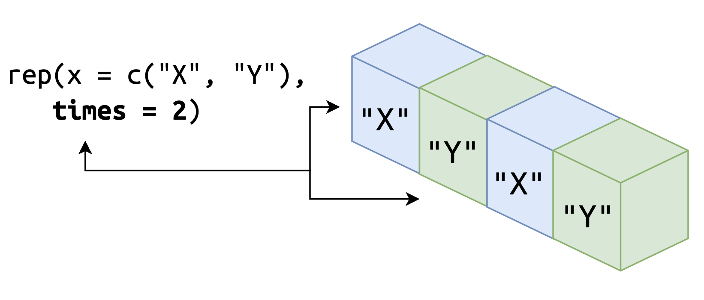
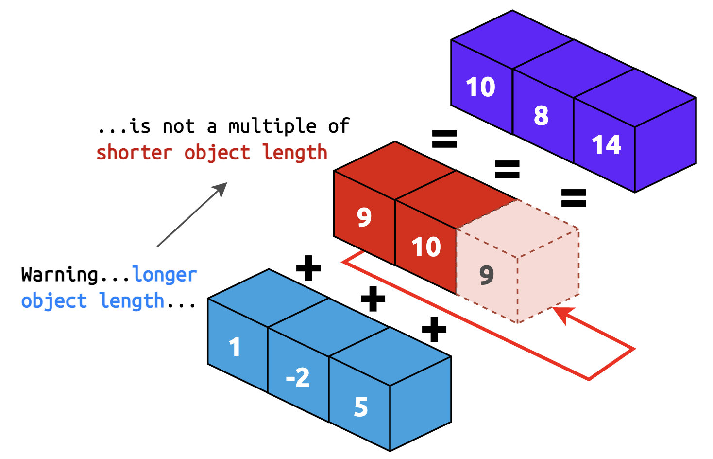

“The fundamental data type in R is the vector.” - THE ART OF R PROGRAMMING, 2011 by Norman Matloff.
An Overview of Atomic Vectors
Atomic vectors are covered in the Base R and Advanced R cheatsheets, and they are the basic building block for data objects in R. The ‘atomic’ refers to, ‘of or forming a single irreducible unit or component in a larger system.’ This tutorial is an introduction to the four types of atomic vectors: logical, integer, double, and character.
Adapted from Advanced R, 2nd Edition
Outline
This tutorial will cover the following topics:
- Creating vectors
- Combining vectors (coercion)
- Vector types
- Vector operations
- Recycling
Creating vectors
The first two functions we’ll learn about for creating vectors are
c() and <-:
c()is used to combine (or concatenate) a variety of items, or elements<-is referred to as the assignment operator, and it’s used withc()to assign elements to a designated object, like so:
object <- c()NOTE: R is an object-oriented, functional programming language, so just about everything that isn’t an object is a function (and vice versa). For example,
class(`<-`) # assignment operator?
## [1] "function"
class(`c`) # c?
## [1] "function"
class(`+`) # plus sign?
## [1] "function"Yep–all functions!
Combine elements with c()
from Base R cheatsheet
We can use c() to create a vector below by entering
elements ("a", "b") inside the
parentheses:
# enter "a" and "b" below (with quotes)
c(, )c("a", "b")The code above simply prints the results to the screen. If we want to
store the elements in an object we can access later, we need to use the
assignment
operator, <-.
Assign with <-
from Base R cheatsheet
The convention is to assign elements to an object using the syntax below:
# assign the elements to my_vector
____ <- c("a", "b")my_vector <- c("a", "b")However, this also works:
# assign the elements to my_vector
c("a", "b") -> ____c("a", "b") -> my_vectorMuch has been said
about R’s assignment operator, so I won’t drone on about it here. The
equals sign (=) can also be used, but I don’t use this
method because I like to reserve = for function arguments
(see examples below).
The code below makes it clear which bit creates
x and which bit uses x.
# assign elements to x
x <- c("a", "b")
# pass x to function
length(x = x)
## [1] 2It’s almost never done in real life, but it’s possible to assign the
elements to x inside the function before passing
the argument.
length(x = # function argument
x <- c("a", "b") # assignment operator
)
## [1] 2Naming vectors
When creating vectors (or any object in R), we need to assign the
object a name (we’ve done this above with my_vector). The
naming conventions I’ll follow come from the tidyverse style guide.
It’s not required to read the entire guide, but the section on naming
objects is relevant to this tutorial.
We’re going to use snake_case
to create vectors and other objects.
my_vector <- c("a", "b")
my_vector
## [1] "a" "b"R allows objects to be created using dots (periods), but this is not advised:
my.vector <- c("a", "b")
my.vector
## [1] "a" "b"Names for objects can’t start with an underscore
(_my_vector) or a number (1my_vector) or a
special character (?my_vector). If you try to create an
improperly named vector, you’ll see an error like the ones below:
# can't start with underscores
_my_vector <- c("a", "b")
Error: unexpected input in "_"# can't start with numbers
1my_vector <- c("a", "b")
Error: unexpected symbol in "1my_vector"# can't start with special characters
^my_vector <- c("a", "b")
Error: unexpected '^' in "^"When naming objects, pick something that’s brief and informative
(i.e, the name tells you something about what the object contains).
Sometimes you’ll see code with objects assigned to ambiguous names like
x, or df, but it’s best to avoid this whenever
possible. Short names also don’t give you the ability to use RStudio’s
tab completion (a topic we’ll touch on in future tutorials).
Creating logical vectors
Logical vectors can only take three elements: TRUE,
FALSE and NA (missing).
In the code block below, create a logical vector below
- Assign the elements
TRUE,FALSE,TRUE,FALSE,FALSEtovec_log
- Print
vec_logon the follow line
<- c(____, ____, ____, ____, ____)
vec_log <- c(TRUE, FALSE, TRUE, FALSE, FALSE)
vec_logCreating integer vectors
Integer vectors contain whole numbers, and need to be created with an
L behind each number.
In the code block below,
- Create
vec_intwith the following elements:4L,21L,2L,3L,10L
- Print
vec_inton the follow line
____ <- c(____, ____, ____, ____, ____)
vec_int <- c(4L, 21L, 2L, 3L, 10L)
vec_intCreating integer sequences
from Base R cheatsheet
We can also create an integer vector by providing an index
(x:y), where x and y are lowest
and highest element values.
# numbers 1 through 5
1:5
## [1] 1 2 3 4 5In the code block below,
- Create
vec_intwith the numbers1through8
- Print
vec_inton the follow line
____ <- c(____:____)
vec_int <- c(1:8)
vec_intCreating double vectors
Double vectors contain numbers with decimals and whole numbers.
In the code block below,
- Create
vec_doubwith the following elements:3.5,0.7,29,4,6.78
- Print
vec_doubon the follow line
____ <- c(____, ____, ____, ____, ____)
vec_doub <- c(3.5, 0.7, 29, 4, 6.78)
vec_doubJust like with integer vectors, we can create an double vector by
providing an index (x:y), but x and
y are the lowest and highest double element values
(i.e. with decimals).
In the code block below,
- Create
vec_doubwith the numbers1.5through5.5
- Print
vec_doubon the follow line
____ <- c(____:____)
vec_doub <- c(1.5:5.5)
vec_doubCreating character vectors
Character vectors are built using elements in quotes (or strings), and can contain things like words, terms, or discrete categories.
In the code block below,
- Create
vec_chrwith the following elements:"hat","chair","cat","dog","book"
- Print
vec_chron the follow line
____ <- c(____, ____, ____, ____, ____)
vec_chr <- c("hat", "chair", "cat", "dog", "book")
vec_chrrep() and seq()
Creating vectors by hand can be time-consuming. Fortunately, R has quite a few functions for generating values. We’ll cover two in this tutorial:
rep(x, ...): replicate the values inx
seq(from, to, by): generate sequences
rep()
from Base R cheatsheet
rep() takes a value x and replicates it
either according the number given to the each or
times argument.
In the code bock below:
- Use
rep()to generate a vector with threeBs and store it inthree_bs
- Print
three_bsto the screen
# replicate the letter "B" three times
three_bs <- rep(x = ____, times = ____)
# print three_bs
three_bs <- rep(x = "B", times = 3)
three_bsrep() isn’t limited to single values, either. We can
provide a multiple elements as a vector or within c().
In the code block below:
- The
three_bsvector has been loaded
- Replicate the combination of
three_bswith"C"and"D"usingc()
rep(x = c(three_bs, ____, ____), times = ____)
rep(x = c(three_bs, "C", "D"), times = 3)As we can see, rep() replicated all three elements three
times, but it treated three_bs as a single element.
The rep() function also has an each
argument, which tells rep() how many times each
“element of x is repeated”. We will demonstrate
how many this works with a simple example vector
(xy_vec):
xy_vec <- c("X", "Y")
xy_vec
## [1] "X" "Y"In the code block below:
- Use
rep()to replicate thexy_vectwotimes
- Use
rep()to repeateachelement inxy_vectwice and replicatexy_vectwotimes.
# repeat the xy_vec twice
rep(x = ____, times = ____)
# repeat the xy_vec twice, and each element two times each
rep(x = ____, each = ____, times = ____)rep(x = xy_vec, times = 2)
rep(x = xy_vec, each = 2, times = 2)When we tell rep() to replicate the vector two
times, we see the pattern of ("X" "Y") gets
replicated twice.

When we add the each argument, we can see
each element is repeated twice, and then the new
pattern ("X" "X" "Y" "Y") is replicated two
times.

seq()
from Base R cheatsheet
seq() creates sequences of numbers. Additional arguments
passed to this function include from, to and
by. We’ll demonstrate how to use seq() to
generate a number sequence from 2 to 10 by
2s.
seq_vec <- seq(from = 2, to = 10, by = 2)
seq_vec
## [1] 2 4 6 8 10We get an seq_vec, an integer vector of five elements,
which we should expect, because 2 / 10 =
5.
What happens when we provide a by argument that
isn’t a multiple of the from and to?
Let’s try it and see.
In the code block below:
- Create a sequence of integers from two to nine by five, store the
output in
seq_vec
- Print
seq_vecto the screen
# create sequence
seq_vec <- seq(from = ____, to = ____, by = ____)
# print seq_vec to the screen
seq_vec# create sequence
seq_vec <- seq(from = 2, to = 9, by = 5)
# print seq_vec to the screen
seq_vecThe output automatically returns the from value, then it
adds the by value until it exceeds the to
value (in this case, that value is seven).
What happens when the by argument is larger than
both the from and to
values? Let’s try it and see.
In the code block below:
- Create a sequence of integers from one to five by ten, store the
output in
seq_vec
- Print
seq_vecto the screen
# create sequence
seq_vec <- seq(from = ____, to = ____, by = ____)
# print seq_vec to the screen
seq_vec# create sequence
seq_vec <- seq(from = 1, to = 5, by = 10)
# print seq_vec to the screen
seq_vecAs we can see, the output is 1 (the start of the
sequence).
Combining vectors (coercion)
You may have noticed all the elements in the vectors we created above were all the same (i.e. logical, character, integer, etc.)–this a key feature of atomic vectors.
All objects in R have a mode (accessed with typeof())
and a class (accessed with class()). To ensure all the
elements of atomic vectors remain the same mode (or type), they adhere
to some underlying ‘coercion’ rules.
The rules of vector coercion are below:
logical < integer <
double < character
If we combine vectors of the same mode, no coercion takes place.
# combine logical with logical
typeof(x =
c(TRUE, # logical
FALSE) # logical
)
## [1] "logical"
class(x =
c(TRUE, # logical
FALSE) # logical
)
## [1] "logical"
# combine integer with integer
typeof(x =
c(4L, # integer
17L) # integer
)
## [1] "integer"
class(x =
c(4L, # integer
17L) # integer
)
## [1] "integer"But if we combine a logical element (TRUE) with an
integer (10L), we’ll get an integer:
# combine logical and integer
typeof(x =
c(TRUE, # logical
10L) # integer
)
## [1] "integer"
class(x =
c(TRUE, # logical
10L) # integer
)
## [1] "integer"Below are some exercises that will help you understand coercion:
Vector coercion
- Combine the elements below into the
test_vector - Print
test_vectorin the line below
- Check the mode with
typeof()and class withclass()
What do you think the resulting type will be?
____ <- c(TRUE, FALSE)
# print the test_vector
test_vector
# check the mode
____(x = test_vector)
# check the class
____(x = test_vector)test_vector <- c(TRUE, FALSE)
# print the test_vector
test_vector
# check the mode
typeof(x = test_vector)
# check the class
class(x = test_vector)test_vector preservers the mode because both elements
are logical.
Logical + integer coercion
Let’s see what happens when we combine a logical element with an integer.
- Combine the elements below into the
test_vector - Print
test_vectorin the line below
- Check the mode with
typeof()and class withclass()
What do you think the resulting type will be?
____ <- c(FALSE, 5L)
# print the test_vector
test_vector
# check the type
____(x = test_vector)
# check the class
____(x = test_vector)test_vector <- c(FALSE, 5L)
# print the test_vector
test_vector
# check the mode
typeof(x = test_vector)
# check the class
class(x = test_vector)Integer + double coercion
The previous example coerced FALSE and 5L
into an integer, because the next mode in our list of coercion rules is
integer:
logical < integer <
double < character
Let’s try a more complicated example. What happens if we combine
logical elements with integers and the number 8?
- Combine the elements below into the
test_vector - Print
test_vectorin the line below
- Check the mode with
typeof()and class withclass()
What do you think the resulting type will be?
____ <- c(FALSE, TRUE, 27L, 5L, 8)
# print the test_vector
test_vector
# check the mode
____(x = test_vector)
# check the class
____(x = test_vector)test_vector <- c(FALSE, TRUE, 27L, 5L, 8)
# print the test_vector
test_vector
# check the mode
typeof(x = test_vector)
# check the class
class(x = test_vector)Here we can see the test_vector is coerced into a double
vector, even though none of the number elements have a decimal
(recall that integer elements have to be created with the
L)
Hopefully you can see the pattern emerging–combining vectors of two different types will automatically convert them to the ‘highest’ type in the rules below:
logical < integer <
double < character
Character coercion
For this final example, what do you think will happen if we try to combine logical, integer, double, and character elements?
- Combine the elements below into the
test_vector - Print
test_vectorin the line below
- Check the mode with
typeof()and the class withclass()
____ <- c(FALSE, TRUE, 27L, 5L, 8.0, "15")
# print the test_vector
test_vector
# check the mode
____(x = test_vector)
# check the class
____(x = test_vector)test_vector <- c(FALSE, TRUE, 27L, 5L, 8.0, "15")
# print the test_vector
test_vector
# check the type
typeof(x = test_vector)
# check the class
class(x = test_vector)The result is a character vector, because if we combine any of the three ‘lower-level’ atomic vectors with a character vector, they’re automatically converted into a character vector:
logical < integer <
double < character
Missing values (NA)
We’re going to take a look at how R deals with missing values. We
mentioned above that logical vectors can three values:
TRUE, FALSE, or NA.
# check the class of logical elements
class(
c(TRUE, FALSE, NA)
)
## [1] "logical"If you recall our conversion rules, logical vectors can be coerced into any other atomic vector,
logical < integer <
double < character
NA can be combined with other vector types, but you
should try to pair vector elements with their appropriate missing
values. For example, if we want to check which kind of missing value, we
can check this with typeof():
typeof(NA_real_)
## [1] "double"
typeof(NA_integer_)
## [1] "integer"
typeof(NA_character_)
## [1] "character"NA constants are also reserved words, meaning we can’t
use them as object names.
NA <- "some value"
Error in NA <- "some value" :
invalid (do_set) left-hand side to assignmentNA coercion
Missing constants are treated like elements of that particular type (and follow the same coercion rules). For example,
- Combine the logical elements with
NA_character_and check it’s mode:
typeof(x =
c(TRUE, FALSE, TRUE, FALSE, FALSE, ____))typeof(x =
c(TRUE, FALSE, TRUE, FALSE, FALSE, NA_character_))What mode was the vector coerced into?
NA is the logical constant (so it will be coerced into
whatever atomic vector mode it’s combined with).
typeof(x =
c(3.5, 0.7, 29, 4, 6.78, NA))
## [1] "double"
typeof(x =
c(4L, 21L, 2L, 3L, 10L, NA))
## [1] "integer"
typeof(x =
c("hat", "chair", "cat", "dog", "book", NA))
## [1] "character"We’ll come back to missing values in future exercises.
Vector types
R also has functions for creating (as.<type>()) or
testing (is.<type>()) each atomic vector. These
functions give us some control over how a vector is coerced (and check
the resulting type). Both is.<type>() and
as.<type>() functions create or test for
objects of a given type (or mode).
is.<type>() &
as.<type>()
The functions used to test the type of an atomic vector have an
is. prefix:
is.logical(),is.integer(),is.double(), andis.character()
The functions used to create an atomic vector of a specific type have
an as. prefix:
as.logical(),as.integer(),as.double(), andas.character()
The as.<type>() group of functions can be used to
manually coerce elements to a different type.
Testing character vectors
In the code block below:
- Create a character vector with
as.character()using the elements below
- Test to see if
vec_chris a character vector usingis.character()
____ <- as.character("hat", "chair", "cat", "dog", "book")
is.____(vec_chr)vec_chr <- as.character("hat", "chair", "cat", "dog", "book")
is.character(vec_chr)The example above is no different than using c() to
create vec_chr. Below is an example of numeric elements in
quotes (as you’ll sometimes encounter when importing data into R from
other sources).
Converting types
In the code block below:
Use
as.double()to coerce the character elements into a double vector (vec_doub)Test the resulting vector with
is.double()
____ <- as.double(x = c("3.5", "0.7", "29", "4", "6.78"))
# test vec_doub
is.____(vec_doub)vec_doub <- as.double(x = c("3.5", "0.7", "29", "4", "6.78"))
# test vec_doub
is.double(vec_doub)What do you think happens if we try to create a vector with elements that can’t be coerced into the specified type?
In the code block below:
- Use
as.integer()to coerce the character elements into an integer vector (vec_int)
- Print the vec_int vector on the following line
____ <- as.integer("A", "B", "C")
# print vec_int
____vec_int <- as.integer("A", "B", "C")
# test vec_int
vec_intThe vector is converted, however R gives us a warning
(Warning: NAs introduced by coercion) and the resulting
vector contains only missing values.
Testing numeric vectors
There are two types of numeric vectors, double and integer. In the code block below:
- Test
vec_intandvec_doubwithis.numeric()
# test integer vector
is.numeric()
# test double vector
is.numeric()# check type of vec_int
is.numeric(vec_int)
# test double vector
is.numeric(vec_doub)Because is.numeric() only tests if a vector is numeric,
we should be more precise and use the is.integer() or
is.double() functions.
Test integer vectors
Recall that integer vectors contain whole numbers (no decimals).
In the code block below:
- Check the mode of
vec_intwithtypeof() - Test
vec_intwithis.integer()
# check mode and test the integer vector
typeof()
is.integer()# check mode and test the integer vector
typeof(vec_int)
is.integer(vec_int)Testing double vectors
Double vectors can contain whole numbers and decimal points.
- Check the mode of
vec_doubwithtypeof() - Test
vec_doubwithis.double()
# check mode and test double vector
typeof()
is.double()# check mode and test double vector
typeof(vec_doub)
is.double(vec_doub)So Far…
Now that we’ve covered how to 1) create vectors (with
c(), <-, rep() and
seq()), 2) name our objects (with snake_case
names), and 3) investigate vector characteristics
(typeof(), is.<type>(), and
as.<type>()), we’re ready to start learning some
common and operations for atomic vectors.
Vector operations
The next few exercises are going to cover some fundamental operations for the four atomic vector types. There are far too many functions and examples to cover in a single tutorial, so these are intended to give you a very brief introduction for each type. If you’d like to learn more about vectors, I highly recommend this chapter in the first edition of R for Data Science, or the vectors chapter or Advanced R, 2ed.
Logical operations
We’re going to start with logical vectors. Recall that logical
vectors can only contain three possible values: TRUE,
FALSE or NA
Comparisons
Logical vectors are helpful for testing specific conditions:
# which elements equal 2?
1:3 == 2
## [1] FALSE TRUE FALSETwo equal signs (==) is R’s method of testing equality.
Other comparison operators are: <, >,
<=, >=, and !=.
In the code block below,
- Fill in the appropriate comparison operator:
# which elements are greater than 2?
1:3 ____ 2
# which elements are greater than or equal to 2?
1:3 ____ 2
# which elements are less than 2?
1:3 ____ 2
# which elements are less than or equal to 2?
1:3 ____ 2
# which elements do not equal 2?
1:3 ____ 2# which elements are greater than 2?
1:3 > 2
# which elements are greater than or equal to 2?
1:3 >= 2
# which elements are less than 2?
1:3 < 2
# which elements are less than or equal to 2?
1:3 <= 2
# which elements do not equal 2?
1:3 != 2any()
Logical vectors are also helpful for testing sets of values. For
example, the any() and all() functions test if
at least one or all conditions are true.
In the code block below,
- Check if at least one of the values in
vec_intare greater than5
any(x = vec_int ____ 5)any(x = vec_int > 5)all()
In the code block below,
- Check if any of the values in
vec_intare less than1
all(x = vec_int ____ 1)all(x = vec_int < 1)which()
which() returns the index (or location) of the elements
that evaluate to TRUE.
vec_int <- 1:10
which(x = vec_int > 5)
## [1] 6 7 8 9 10In this case, it’s the second and fifth element of
vec_int. By itself, which() might not seem too
helpful, but we can combine it’s return value with some vector
subsetting to return the TRUE elements from
vec_int.
In the code block below,
- View the contents of the
vec_intvector - Use
which()to determine the values less than or equal to5invec_int
# view vec_int
which(x = vec_int ____ 5)vec_int
which(x = vec_int <= 5)We can see this returns the index of values less than or equal to five.
In the code block below,
- Assign the output from
which()tofive_or_less
- Click Run Code to subset the
vec_intwith the indexes
____ <- which(x = vec_int ____ 5)
vec_int[five_or_less]five_or_less <- which(x = vec_int <= 5)
vec_int[five_or_less]Creating a sub-vector (five_or_less) and using it to
extract numbers from the original vector (vec_int) is
called vector indexing, and we’ll cover this more in the
subsetting tutorial.
sum()
Logical vectors are also handy because they add up to the number of
TRUE elements (TRUE = 1, FALSE =
0). We’ve loaded a logical vector (vec_log) in the code
block below:
vec_logGet the sum() of vec_log below:
# check the sum of 'vec_log' below
sum()sum(vec_log)Remove missing values (NA)
What happened? In the previous output, the
sum() of the logical vector returned only missing values.
This is because we had a missing value in vec_log:
The sum() function (and many others) will only perform
operations on non-missing values (this is why it’s so important to
view your data before applying a series of functions on it).
We can tell sum() how to deal with missing values using
the na.rm = argument. Most functions have this argument (it
stands for ‘NA remove’).
In the code block below:
- Get the
sum()ofvec_log
- Set
na.rmtoTRUE
# check the sum of 'vec_log' (remove missing)
sum()sum(vec_log, na.rm = TRUE)Now we can see how many TRUE elements were in
vec_log!
Numerical operations
The following operations can be used on integer or double vectors. Recall there are two types of numerical vectors: integer and double.
Integer vectors are whole numbers (created with the L
behind the digit),
is.integer(1L)
## [1] TRUEDouble vectors include decimals (i.e. 1.01)
is.double(1.01)
## [1] TRUENumerical summaries
R was created for statistics and data visualizations, so most of the functions are built to work with numerical vectors (integer and double).
Some common functions are:
mean()andmedian()(the average and middle number)
sd()andIQR()(measures of the ‘spread’ or ‘dispersion’)
In the code block below,
- Use the functions to calculate and store the summary statistics for
vec_int
- Combine the statistics into the
vec_int_sumvector
- Print the
vec_int_sumon the following line
int_mean <- ____(vec_int)
int_med <- ______(vec_int)
int_sd <- __(vec_int)
int_iqr <- ___(vec_int)
vec_int_sum <- c(____, ____, ____, ____)
# print vec_int_sum
int_mean <- mean(vec_int)
int_med <- median(vec_int)
int_sd <- sd(vec_int)
int_iqr <- IQR(vec_int)
vec_int_sum <- c(int_mean, int_med, int_sd, int_iqr)
vec_int_sumNamed vectors
Now we’ve combined these four outputs into a single vector, but it might be hard to keep track without some way of identifying each statistic. We can do this by setting the names for each element.
We’ve loaded the vec_int_sum vector below. Recall that
the function outputs were organized in the following order: mean,
median, sd, and IQR.
We can give the vector names when we build it, using
name = vector in the c()
function. In the code block below,
In the code block below:
- Place each vector next to the appropriate name for each value
- Print the
named_int_sumon the following line
int_mean <- mean(vec_int)
int_med <- median(vec_int)
int_sd <- sd(vec_int)
int_iqr <- IQR(vec_int)
# create a named vector
named_int_sum <- c(
mean = ____,
sd = ____,
median = ____,
iqr = ____
)
int_mean <- mean(vec_int)
int_med <- median(vec_int)
int_sd <- sd(vec_int)
int_iqr <- IQR(vec_int)
# create a named vector
named_int_sum <- c(
mean = int_mean,
sd = int_sd,
median = int_med,
iqr = int_iqr
)
named_int_sumAssigning names()
We can also assign names to an object using the names()
function. names() can be used to set or get the names of an
object.
In the code block below:
- Get the names of
named_int_sumusingnames()and store the output inint_sum_nms - Print the names (
int_sum_nms) - Set the names on
named_int_sumafter converting them to uppercase using thetoupper()function
- Print the
named_int_sumvector with new uppercase names
int_sum_nms <- names(____)
# print names
____
# convert to upper case
names(named_int_sum) <- toupper(____)
# print named (upper case) vector
____int_sum_nms <- names(named_int_sum)
# print names
int_sum_nms
# convert to upper case
names(named_int_sum) <- toupper(int_sum_nms)
# print named (upper case) vector
named_int_sumRounding numbers
Finally, lets round the numbers in the named_int_sum to
two digits using the round() function. Now that we’ve
combined the output into a single vector, we only have to apply it
once.
In the code block below:
- Apply
round()tonamed_int_sum
- Set the
digitsto2
- Print
named_int_sumon the following line
# round the digits to 2
____ <- round(x = ____, digits = ____)
# round the digits to 2
named_int_sum <- round(x = named_int_sum, digits = 2)
named_int_sumNow we have a vector we can use in a report or store for future use.
Character opertations
Character vectors (or strings) have a variety of functions that allow us to manipulate their contents.
Recall that character vectors contain any values in quotes
("")
is.character("8L")
## [1] TRUE
is.character("text")
## [1] TRUE
is.character("~")
## [1] TRUECombining characters
Perhaps the most common is paste0() and
paste(). paste0() combines multiple elements
into a single element.
paste0("these", "are", "some", "words")
## [1] "thesearesomewords"paste() is just like paste0(), but it’s
default separator is a space
paste("these", "are", "some", "words")
## [1] "these are some words"These functions come in handy often, such as dealing with file paths
and folders. For example, the ggplot2_data vector contains
the names of the datasets in the ggplot2
package.
# view ggplot2_data data
ggplot2_dataIf we wanted to export these as CSV files into a data/
folder, we could create the file paths using paste0():
In the code block below:
- Use
paste0()to combine"data/",ggplot2_dataand".csv"
paste0(____, ggplot2_data, ____)paste0("data/", ggplot2_data, ".csv")Separating pasted characters
paste() has a sep argument we can use to
provide an additional character (or characters) between the vectors.
This comes in handy when we want to create a series of group
identifiers.
Consider the groups vector below:
groups
## [1] "A" "B" "C" "D" "E"In the code block below:
- Use
paste()andsepto combine the fivegroupswith a numeric prefix and a dash (i.e.,A-1,B-2)
paste(____, 1:5, sep = ____)paste(groups, 1:5, sep = "-")Collapsing pasted characters
Both paste() and paste0() also have a
collapse argument, which is easy to confuse with
sep. However, the sep argument is a character
string used to separate the terms, and the
collapse argument is a character string we can use to
separate the results.
Consider the two vectors below: uc_grps and
lc_grps
# uppercase groups
uc_grps
## [1] "A" "B" "C" "D" "E"
# lowercase groups
lc_grps
## [1] "a" "b" "c" "d" "e"In the code block below:
- Pass both vectors to
paste()without theseporcollapsearguments
# no sep or collapse
paste(____, ____)# no sep or collapse
paste(uc_grps, lc_grps)This results in a character vector with five elements (the
combination of uc_grps and lc_grps). The
string passed to the collapse argument will separate these
five elements.
In the code block below:
- Pass both vectors to
paste()and set thecollapseargument to"|"
# collapse
paste(____, ____, collapse = ____)# collapse
paste(uc_grps, lc_grps, collapse = "|")paste() combined the elements in the two vectors first,
then collapsed the output around the pasted elements. Can you
predict what the output will look like if we provide the same string to
the sep argument?
In the code block below:
- Pass both vectors to
paste()and set thesepargument to"|"
# sep
paste(____, ____, sep = ____)# sep
paste(uc_grps, lc_grps, sep = "|")paste() combined the elements in the two vectors
separated by string we provided in the sep
argument. Below is anther exercise using paste() to test
your knowledge.
Paste, separate and collapse
Consider the follow text string:
"[A-1]+[B-2]+[C-3]+[D-4]+[E-5]"In the code block below:
- Use
paste(),sepandcollapserecreate the text string above
- The
groupsvector is available
paste(____, groups, ____, ____, ____, collapse = ____, sep = ____)paste("[", groups, "-", 1:5, "]", collapse = "+", sep = "")How long or how many?
The final character vector operation we’ll cover deals with a common
function you’ll encounter when working with vectors. It’s often useful
to determine how many elements are in a vector, and we can do this using
the length() function. See the example below:
vec_int <- c(4L, 21L, 2L, 3L, 10L)
length(x = vec_int)
## [1] 5We can see length() returns the number of elements in
vec_int. When dealing with character vectors, sometimes we
end up with large elements.
Consider the three vectors loaded in the code block below:
vec_big_chrvec_med_chrvec_chr
# view vec_big_chr, vec_med_chr and vec_chrThese three vectors all contain the same information, but have different lengths.
Use the code block below to check the length of each vector.
length(x = ____) # check vec_chr
length(x = ____) # check vec_med_chr
length(x = ____) # check vec_big_chrlength(x = vec_chr)
length(x = vec_med_chr)
length(x = vec_big_chr)length() returns the number of elements in a
vector, but nchar() returns the number of
characters in the vector.
In the code block below:
- Enter the correct vector (
vec_chr,vec_med_chrorvec_big_chr) in thenchar()so all the logical elements evaluate toTRUE:
nchar(x = ____) == as.integer(21)
nchar(x = ____) == as.integer(c(9, 11))
nchar(x = ____) == as.integer(c(5, 3, 3, 7))nchar(x = vec_big_chr) == as.integer(21)
nchar(x = vec_med_chr) == as.integer(c(9, 11))
nchar(x = vec_chr) == as.integer(c(5, 3, 3, 7))Recycling
The final topic we’ll cover in this introduction to atomic vectors is recycling. When performing basic mathematical operations on vectors with the same number of elements, vector length is preserved.
# two vectors of length 2
c(9, 10) + c(1, -2)
## [1] 10 8What if we perform operations on vectors with unequal lengths? This is what we’re going to explore in the next few exercises.
Consider the following two vectors of unequal length:
vec_int3
## [1] 1 -2 5
vec_int2
## [1] 9 10In the code block below:
- Add
vec_int3tovec_int2with the+symbol:
____ + ____vec_int2 + vec_int3Recycling rules
Let’s go over the output from the previous exercise:
[1] 10 8 14
Warning message:
In vec_int2 + vec_int3 :
longer object length is not a multiple of shorter object lengthWe can see that the mathematical operation was performed, but we’ve
been told the the longer object length (vec_int3) is
not a multiple of shorter object (vec_int2)
length.
So what happened?
The first two vector elements were added together
(9 + 1 = 10,
10 + (-2) = 8):
9 10 [ ]
+ 1 -2 5
-------------
10 8 [ ]But when the operation arrived at the third element in
vec_int3 (i.e., [ ] + 5 =
[ ]), it recycled the values, starting
again from the first number ([9] + 5 =
[14]):
9 10 [9]
+ 1 -2 5
-------------
10 8 [14]This is what was meant by longer object length is not a multiple of shorter object length. If the shorter object length was a multiple of the larger object length, there is no need for vector recycling (and we wouldn’t see this warning).

Consider the following vectors:
In the code block below:
- Combine
vec_int3with anothervec_int3usingc()and store this invec_int6
- Add
vec_int6tovec_int2
____ <- c(____, ____)
vec_int2 + ____vec_int6 <- c(vec_int3, vec_int3)
vec_int2 + vec_int6Is this what you predicted would happen? Let’s look at
vec_int6 and vec_int2:
vec_int6
[1] 1 -2 5 1 -2 5
vec_int2
[1] 9 10How did we get the following output?
vec_int2 + vec_int6
[1] 10 8 14 11 7 15Well, the first two numbers of vec_int6 were added to
vec_int2, then we recycled the elements in
vec_int2 (starting from [9] + 5) and continued
for the remaining four elements in vec_int6:
9 | 10| [9]| [10]| [9]| [10]|
+ 1 | -2| 5| 1| -2| 5|
--------------------------------
10 8 14 11 7 15Conclusion
We’ve covered the following topics:
- Creating atomic vectors
c()and the assignment operator (<-)- Creating logical, integer, double, and character vectors
- Naming vectors with
snake_casefollowing the tidyverse style guide
- Replicating values with
rep()`
- Creating sequences of numbers with
seq()
- Combining vectors and vector coercion
- Vector coercion rules
logical<integer<double<character
logical+integercoercion
integer+doublecoercion
charactercoercion
NAvalue coercionNA_integer_
NA_real_
NA_character_
- Vector coercion rules
- Testing/Creating Vector Types
is.logical()
is.integer()
is.double()
is.character()
as.logical()
as.integer()
as.double()
as.character()
- Logical Operations
- Comparisons:
==,>,<,<=,>=,!=
any()
all()
which()
sum()
- Comparisons:
- Numerical Operations
mean()
median()
sd()
IQR()
round()
- Character Operations
paste()andpaste0()
length()andnchar()
- Recycling
- What happens when we perform operations on vectors with unequal lengths?
Continue learning about more complex vectors in the next tutorial.